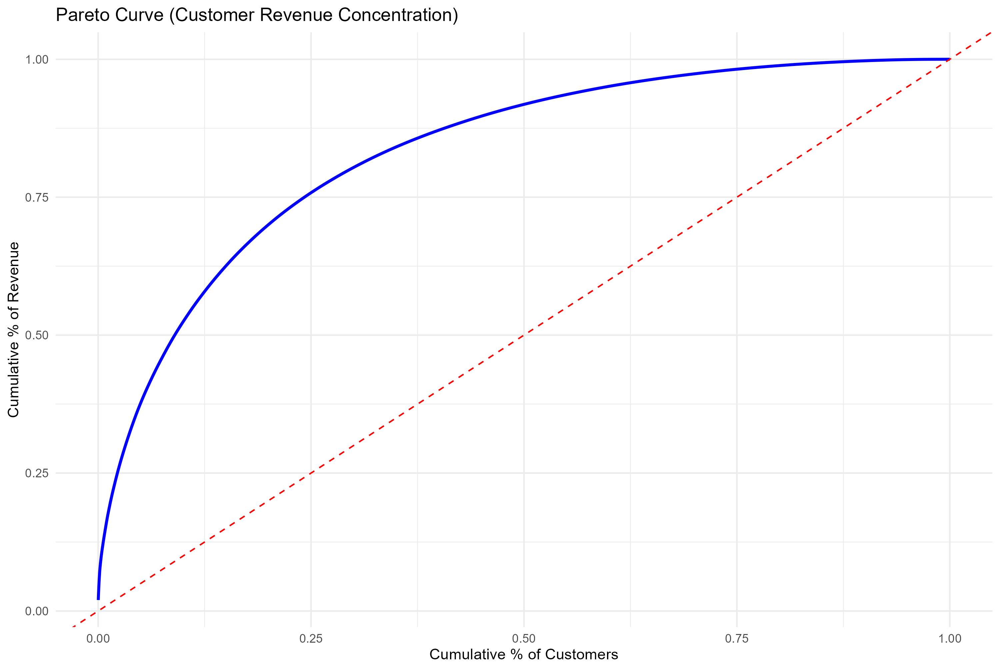

Business Problem
Customer churn was reducing revenue and increasing reliance on costly new acquisitions. The business lacks clear insight into why customers leave and fails to detect early warning signs. Retention efforts are reactive and not personalized, leading to low engagement. A data-driven approach is needed to predict churn and target at-risk customers effectively.
Project Overview
This project identifies high-value customers based on lifetime value (LTV) to optimize churn retention efforts. It uses customer data to predict churn risk and prioritize targeted strategies, improving retention and maximizing campaign ROI.
Data Requirement
- Product purchase history
- Quantity per invoice
- Product price
- CustomerID
- Product description
Data Preparation
Step 1: Data summary checks
library(readxl)
library(tidyverse)
# data load: please change the path of your data
sheet1 <- read_excel("online_retail_II.xlsx", sheet = "Year 2009-2010")
sheet2 <- read_excel("online_retail_II.xlsx", sheet = "Year 2010-2011")
df <- rbind(sheet1, sheet2)
# Step 0: Data preparation
# customer missing value exclusion
summary(df)
colSums(is.na(df))
df <- df %>%
filter(!is.na(`Customer ID`))
# Quantity variable treatment
table(df$Quantity)
df$Qtgroup <- cut(df$Quantity,
breaks = c(-Inf, 0, 5, 10, 15, 20, 25, 50, 100, Inf),
labels = c("<=0", "1-5", "6-10", "11-15", "16-20", "21-25", "26-50", "51-100", "100+"),
right = TRUE)
p = ggplot(df, aes(x = Qtgroup)) +
geom_bar(fill = "steelblue") +
geom_text(stat = "count", aes(label = ..count..), vjust = -0.3) +
labs(title = "Quantity Grouped Distribution",
x = "Quantity Groups",
y = "Count")
# Save image
ggsave("Qtgroup_distribution.png", plot = p,
width = 10, height = 6.7, # 16:9 aspect ratio
dpi = 300)Step 2: Missing value imputation and outlier treatment
# Invalid values → NA
df$Quantity[df$Quantity < 0] <- NA
# IQR
Q1 <- quantile(df$Quantity, 0.25, na.rm = TRUE)
Q3 <- quantile(df$Quantity, 0.75, na.rm = TRUE)
IQR_val <- Q3 - Q1
lower_bound <- Q1 - 1.5 * IQR_val
upper_bound <- Q3 + 1.5 * IQR_val
# Outliers
outliers <- df$Quantity < lower_bound | df$Quantity > upper_bound
# Impute NA
median_quantity <- median(df$Quantity, na.rm = TRUE)
df$Quantity[is.na(df$Quantity)] <- median_quantity
# Treat outliers
df$Quantity[outliers] <- median_quantity
df$Qtgroup <- cut(df$Quantity,
breaks = c(-Inf, 0, 5, 10, 15, 20, 25, 50),
labels = c('<=0'', "1-5", "6-10", "11-15", "16-20", "21-25", '26-50'),
right = TRUE)
p = ggplot(df, aes(x = Qtgroup)) +
geom_bar(fill = "steelblue") +
geom_text(stat = "count", aes(label = ..count..), vjust = -0.3) +
labs(title = "Quantity Grouped Distribution",
x = "Quantity Groups",
y = "Count")
# Save image
ggsave("Qtgroup_distribution.png", plot = p,
width = 10, height = 6.7, # 16:9 aspect ratio
dpi = 300) # high-res for crispness
# Price variable treatment
df$pricegroup <- cut(df$Price,
breaks = c(-Inf, 0, 5, 10, 15, 20, Inf),
labels = c("<0", "1-5", "6-10", "11-15", "16-20", "20+"),
right = TRUE)
p = ggplot(df, aes(x = pricegroup)) +
geom_bar(fill = "steelblue") +
geom_text(stat = "count", aes(label = ..count..), vjust = -0.3) +
labs(title = "Price Grouped Distribution",
x = "Price Groups",
y = "Count")
# Save image
ggsave("Pricegroup_distribution.png", plot = p,
width = 10, height = 6.7, # 16:9 aspect ratio
dpi = 300)
# Invalid values → NA
df$Price[df$Price < 1] <- NA
# Impute NA
median_price <- median(df$Price, na.rm = TRUE)
df$Price[is.na(df$Price)] <- median_price
# IQR
Q1_p <- quantile(df$Price, 0.25)
Q3_p <- quantile(df$Price, 0.75)
IQR_p <- Q3_p - Q1_p
lower_bound_p <- Q1_p - 1.5 * IQR_p
upper_bound_p <- Q3_p + 1.5 * IQR_p
# Outliers
outliers_p <- df$Price < lower_bound_p | df$Price > upper_bound_p
# Step 5: Treat outliers
df$Price[outliers_p] <- median_price
df$pricegroup <- cut(df$Price,
breaks = c(-Inf, 0, 2, 3, 4, 5, Inf),
labels = c("<0", "1", "2", "3", "4", "4-7"),
right = TRUE)
p = ggplot(df, aes(x = pricegroup)) +
geom_bar(fill = "steelblue") +
geom_text(stat = "count", aes(label = ..count..), vjust = -0.3) +
labs(title = "Price Grouped Distribution",
x = "Price Groups",
y = "Count")
# Save image
ggsave("Pricegroup_distribution.png", plot = p,
width = 10, height = 6.7, # 16:9 aspect ratio
dpi = 300)
# country wise distribution
df %>%
count(Country, sort = TRUE)RFM variable creation
# RFM Variables
library(dplyr)
library(lubridate)
df <- df %>%
mutate(
InvoiceDate = as.POSIXct(InvoiceDate), # or ymd_hms/ymd depending on format
InvoiceDateDate = as.Date(InvoiceDate),
Revenue = Quantity * Price
)
analysis_date <- max(df$InvoiceDateDate, na.rm = TRUE)
customer_df <- df %>%
group_by(`Customer ID`) %>%
summarise(
first_purchase_date = min(InvoiceDateDate, na.rm = TRUE),
last_purchase_date = max(InvoiceDateDate, na.rm = TRUE),
recency_days = as.numeric(analysis_date - last_purchase_date),
tenure_days = pmax(as.numeric(last_purchase_date - first_purchase_date), 1),
live_days = pmax(as.numeric(analysis_date - first_purchase_date), 1),
n_invoices = n_distinct(Invoice),
n_lines = n(), # total line items
total_quantity = sum(Quantity, na.rm = TRUE),
total_revenue = sum(Revenue, na.rm = TRUE),
avg_order_value = total_revenue / n_invoices,
avg_line_value = mean(Revenue, na.rm = TRUE),
mean_unit_price = mean(Price, na.rm = TRUE),
median_unit_price = median(Price, na.rm = TRUE),
n_products = n_distinct(StockCode),
main_country = names(sort(table(Country), decreasing = TRUE))[1]
) %>%
ungroup()
customer_df <- customer_df %>%
mutate(
purchase_frequency_month = ifelse(
tenure_days > 1,
n_invoices / (tenure_days / 30),
1
),
quantity_per_invoice = total_quantity / n_invoices,
lines_per_invoice = n_lines / n_invoices,
revenue_per_day_active = ifelse(
tenure_days > 0,
total_revenue / tenure_days,
1
)
)
# Step 1:Customer metrics
# Heterogeneity
summary(df)
colSums(is.na(customer_df))
# Revenue and frequency heterogeneity
# High CV (>1) = strong heterogeneity
customer_df %>%
summarise(
rev_mean = mean(total_revenue, na.rm = TRUE),
rev_sd = sd(total_revenue, na.rm = TRUE),
rev_cv = rev_sd / rev_mean,
freq_mean = mean(purchase_frequency_month, na.rm = TRUE),
freq_sd = sd(purchase_frequency_month, na.rm = TRUE),
freq_cv = freq_sd / freq_mean
)Customer Metrics
Revenue Distribution
p = ggplot(customer_df, aes(x = total_revenue)) +
geom_histogram(bins = 50) +
scale_x_log10() +
ggtitle("Revenue Distribution (log scale)")
# Save image
ggsave("Revenue_Distribution.png", plot = p,
width = 10, height = 6.7, # 16:9 aspect ratio
dpi = 300)
summary(customer_df$total_revenue)Quantity Distribution
p = ggplot(customer_df, aes(x = total_quantity)) +
geom_histogram(bins = 500) +
coord_cartesian(xlim = c(0, 5000)) +
ggtitle("Quantity Distribution")
# Save image
ggsave("Quantity_Distribution.png", plot = p,
width = 10, height = 6.7, # 16:9 aspect ratio
dpi = 300)
summary(customer_df$total_quantity)Recency Distribution
p = ggplot(customer_df, aes(x = recency_days)) +
geom_histogram(bins = 50) +
ggtitle("Recency Distribution")
# Save image
ggsave("Recency Distribution.png", plot = p,
width = 10, height = 6.7, # 16:9 aspect ratio
dpi = 300)
summary(customer_df$recency_days)Monthly Purchase Frequency
p = ggplot(customer_df, aes(x = purchase_frequency_month)) +
geom_histogram(bins = 50) +
ggtitle("Monthly Purchase Frequency")
# Save image
ggsave("Monthly_Purchase_Frequency.png", plot = p,
width = 10, height = 6.7, # 16:9 aspect ratio
dpi = 300)
summary(customer_df$purchase_frequency_month)Pareto Analysis
Concentration of customers and revenue
# Pareto Analysis
pareto_df <- customer_df %>%
arrange(desc(total_revenue)) %>%
mutate(
customer_rank = row_number(),
cum_customers = customer_rank / n(),
cum_revenue = cumsum(total_revenue) / sum(total_revenue)
)
p = ggplot(pareto_df, aes(x = cum_customers, y = cum_revenue)) +
geom_line(color = "blue", size = 1) +
geom_abline(slope = 1, intercept = 0, linetype = "dashed", color = "red") +
labs(
title = "Pareto Curve (Customer Revenue Concentration)",
x = "Cumulative % of Customers",
y = "Cumulative % of Revenue"
) +
theme_minimal()
# Save image
ggsave("Pareto_Curve.png", plot = p,
width = 10, height = 6.7, # 16:9 aspect ratio
dpi = 300)

Customer Segmentation
Detailed breakdown of directional spillovers TO and FROM each country in the G20 network.
# customer value counts
customer_df <- customer_df %>%
mutate(
segment = case_when(
recency_days < 30 & total_revenue > median(total_revenue) ~ "High Value customers",
recency_days < 30 ~ "Active Low Spenders",
recency_days >= 30 & total_revenue > median(total_revenue) ~ "At Risk High Value",
TRUE ~ "Low Value Inactive"
)
)
table(customer_df$segment)K-MEANS Cluster
# Customer segmentation
features <- customer_df %>%
select(
recency_days,
tenure_days,
total_revenue,
# purchase_frequency_month,
# avg_order_value,
# total_quantity,
# revenue_per_day_active,
# n_products
)
features_scaled <- scale(features)
wss <- sapply(1:10, function(k) {
kmeans(features_scaled, centers = k, nstart = 10)$tot.withinss
})
plot(1:10, wss, type = "b",
xlab = "Number of Clusters",
ylab = "Within-cluster Sum of Squares")
set.seed(123)
kmeans_model <- kmeans(features_scaled, centers = 3, nstart = 25)
customer_df$cluster <- as.factor(kmeans_model$cluster)
cluster_profile <- customer_df %>%
group_by(cluster) %>%
summarise(
n_customers = n(),
avg_recency = mean(recency_days),
avg_tenure = mean(tenure_days),
avg_revenue = mean(total_revenue),
avg_frequency = mean(purchase_frequency_month),
avg_aov = mean(avg_order_value)
)
cluster_profile
p = ggplot(customer_df, aes(x = recency_days, y = total_revenue, color = cluster)) +
geom_point(alpha = 0.5) +
scale_y_log10() +
labs(title = "Customer Segments (K-means)")
# Save image
ggsave("k_means.png", plot = p,
width = 10, height = 6.7, # 16:9 aspect ratio
dpi = 300)Value and Risk Exposure
#Comparison of segments in terms of value and risk exposure
segment_profile <- customer_df %>%
group_by(cluster) %>%
summarise(
n_customers = n(),
total_revenue = sum(total_revenue),
avg_revenue = total_revenue/n_customers,
avg_order_value = mean(avg_order_value),
avg_frequency = mean(purchase_frequency_month),
avg_recency = mean(recency_days),
avg_tenure = mean(tenure_days)
) %>%
arrange(desc(total_revenue))
segment_profile
p = ggplot(segment_profile, aes(x = avg_recency, y = avg_revenue, size = n_customers, color = cluster)) +
geom_point(alpha = 0.8) +
scale_size(range = c(5, 15)) +
scale_y_log10() +
labs(
title = "Customer Segments: Value vs Risk",
x = "Average Recency (days, higher = more risk)",
y = "Average Revenue (log scale)",
size = "Number of Customers"
) +
theme_minimal()
# Save image
ggsave("value_vs_risk.png", plot = p,
width = 10, height = 6.7, # 16:9 aspect ratio
dpi = 300)
Churn Prediction: Logistic Model
# Step 3: Churn prediction
hist(customer_df$recency_days)
set.seed(123) # for reproducibility
# Using approximate quartiles to define buckets
customer_df <- customer_df %>%
mutate(recency_bucket = cut(recency_days,
breaks = c(-1, 30, 90, 180, Inf),
labels = c("0-30", "31-90", "91-180", ">180")))
set.seed(123)
customer_df <- customer_df %>%
mutate(churn = case_when(
recency_bucket == "0-30" ~ rbinom(n(), 1, prob = 0.02), # very low churn
recency_bucket == "31-90" ~ rbinom(n(), 1, prob = 0.05), # low churn
recency_bucket == "91-180" ~ rbinom(n(), 1, prob = 0.20), # moderate churn
recency_bucket == ">180" ~ rbinom(n(), 1, prob = 0.70), # high churn
TRUE ~ NA_real_
))
table(customer_df$churn)
prop.table(table(customer_df$churn))
# Churn prediction
features <- customer_df %>%
select(
# recency_days,
live_days,
tenure_days,
total_revenue,
purchase_frequency_month,
avg_order_value,
n_invoices,
n_products
)
target <- customer_df$churn
features_clean <- features %>%
mutate(across(everything(), ~ ifelse(is.infinite(.) | is.nan(.), NA, .))) %>%
mutate(across(everything(), ~ ifelse(is.na(.), median(., na.rm = TRUE), .)))
# Target variable
target <- customer_df$churn
Logistic Regression Model
set.seed(123)
library(caret)
# Training and test splitting
train_index <- createDataPartition(target, p = 0.7, list = FALSE)
train_data <- features_clean[train_index, ]
train_target <- target[train_index]
test_data <- features_clean[-train_index, ]
test_target <- target[-train_index]
str(train_data)
str(test_data)
table(customer_df$churn)
table(train_target)
table(test_target)
# Logistic regression model
logistic_model <- glm(train_target ~ ., data = train_data, family = binomial)
summary(logistic_model)
pred_prob <- predict(logistic_model, newdata = test_data, type = "response")
hist(pred_prob)
summary(customer_df$total_revenue)
library(pROC)
roc_obj <- roc(test_target, pred_prob)
auc_val <- auc(roc_obj)
# Save plot as PNG
png("roc_curve.png", width = 800, height = 600)
plot(roc_obj, main = "ROC Curve - Churn Prediction")
# Add AUC label
text(0.6, 0.2, labels = paste("AUC =", round(auc_val, 3)), cex = 1.5)
dev.off()
pred_class <- ifelse(pred_prob > 0.40, 1, 0)
confusionMatrix(factor(pred_class), factor(test_target))
Profit Curve
# profit maximization for whole data
thresholds <- seq(0, 1, by = 0.01)
profit_vals <- sapply(thresholds, function(th) {
pred_churn <- ifelse(pred_prob > th, 1, 0)
tp <- sum(pred_churn == 1 & test_target == 1) # true positives
fp <- sum(pred_churn == 1 & test_target == 0) # false positives
profit <- tp * 500 - fp * 50 # profit formula
return(profit)
})
profit_curve <- data.frame(
threshold = thresholds,
profit = profit_vals
)
summary(customer_df$total_revenue)
# Threshold with max profit
optimal <- profit_curve[which.max(profit_curve$profit), ]
optimal
# customers tagetted
opt_th <- optimal$threshold
pred_opt <- ifelse(pred_prob > opt_th, 1, 0)
num_targeted <- sum(pred_opt == 1)
num_targeted
library(ggplot2)
p = ggplot(profit_curve, aes(x = threshold, y = profit)) +
geom_line(color = "blue") +
geom_vline(xintercept = optimal$threshold, linetype = "dashed", color = "red") +
labs(
title = "Profit Curve for Churn Targeting",
x = "Probability Threshold",
y = "Profit ($)"
) +
theme_minimal()
# Save image
ggsave("Profit_curve.png", plot = p,
width = 10, height = 6.7, # 16:9 aspect ratio
dpi = 300)
Alternative Models
# Alternative models
# 1) D Tree
library(rpart)
library(rpart.plot)
tree_model <- rpart(train_target ~ ., data = train_data, method = "class")
rpart.plot(tree_model)
# Predictions
tree_prob <- predict(tree_model, newdata = test_data, type = "prob")[,2]
# AUC
roc_tree <- roc(test_target, tree_prob)
auc(roc_tree)
# 2) Random Forest
library(randomForest)
rf_model <- randomForest(
x = train_data,
y = factor(train_target),
ntree = 200,
mtry = 3,
importance = TRUE
)
# Predictions
rf_prob <- predict(rf_model, newdata = test_data, type = "prob")[,2]
# AUC
roc_rf <- roc(test_target, rf_prob)
auc(roc_rf)
# Feature importance
importance(rf_model)
varImpPlot(rf_model)
# 3) XG Boost
library(xgboost)
dtrain <- xgb.DMatrix(data = as.matrix(train_data), label = train_target)
dtest <- xgb.DMatrix(data = as.matrix(test_data), label = test_target)
xgb_model <- xgb.train(
data = dtrain,
nrounds = 100,
objective = "binary:logistic",
eval_metric = "auc",
max_depth = 4,
eta = 0.1
)
xgb_prob <- predict(xgb_model, dtest)
library(pROC)
roc_xgb <- roc(test_target, xgb_prob)
auc(roc_xgb)
# 4) LASSO
library(glmnet)
x_train <- as.matrix(train_data)
y_train <- train_target
x_test <- as.matrix(test_data)
cv_model <- cv.glmnet(
x_train,
y_train,
family = "binomial",
alpha = 1 # 1 = LASSO, 0 = Ridge
)
# lasso_prob <- predict(cv_model, newx = x_test, s = "lambda.min", type = "response")
lasso_prob <- as.vector(predict(cv_model, newx = x_test, s = "lambda.min", type = "response"))
roc_lasso <- roc(test_target, lasso_prob)
auc(roc_lasso)
# 5) SVM
library(e1071)
svm_model <- svm(
x = train_data,
y = factor(train_target),
probability = TRUE
)
svm_pred <- predict(svm_model, test_data, probability = TRUE)
svm_prob <- attr(svm_pred, "probabilities")[,2]
roc_svm <- roc(test_target, svm_prob)
auc(roc_svm)
# Compare all models
model_auc <- data.frame(
Model = c("Logistic", "Tree", "Random Forest", "XGBoost", "LASSO", "SVM"),
AUC = c(
auc(roc_obj),
auc(roc_tree),
auc(roc_rf),
auc(roc_xgb),
auc(roc_lasso),
auc(roc_svm)
)
)
model_auc[order(-model_auc$AUC), ]
results <- data.frame(
actual = test_target,
logistic = pred_prob,
tree = tree_prob,
rf = rf_prob,
xgb = xgb_prob,
lasso = lasso_prob,
svm = svm_prob
)
library(pROC)
library(ggplot2)
roc_list <- list(
Logistic = roc(results$actual, results$logistic),
Tree = roc(results$actual, results$tree),
RF = roc(results$actual, results$rf),
XGB = roc(results$actual, results$xgb),
LASSO = roc(results$actual, results$lasso),
SVM = roc(results$actual, results$svm)
)
# Convert to dataframe for ggplot
roc_df <- do.call(rbind, lapply(names(roc_list), function(model) {
data.frame(
tpr = roc_list[[model]]$sensitivities,
fpr = 1 - roc_list[[model]]$specificities,
model = model
)
}))
p= ggplot(roc_df, aes(x = fpr, y = tpr, color = model)) +
geom_line(size = 1) +
geom_abline(linetype = "dashed") +
labs(
title = "ROC Curve Comparison",
x = "False Positive Rate",
y = "True Positive Rate"
) +
theme_minimal()
# Save image
ggsave("models_comaparison.png", plot = p,
width = 10, height = 6.7, # 16:9 aspect ratio
dpi = 300)Retention simulation
Priority Matrix
library(scales)
options(scipen = 999)
customer_df <- customer_df %>%
mutate(expected_remaining_months = 1 / churn_prob)
# Handle NA + outliers in one go
median_erm <- median(customer_df$expected_remaining_months, na.rm = TRUE)
Q1 <- quantile(customer_df$expected_remaining_months, 0.25, na.rm = TRUE)
Q3 <- quantile(customer_df$expected_remaining_months, 0.75, na.rm = TRUE)
IQR_val <- Q3 - Q1
lower <- Q1 - 1.5 * IQR_val
upper <- Q3 + 1.5 * IQR_val
customer_df <- customer_df %>%
mutate(
expected_remaining_months = ifelse(
is.na(expected_remaining_months) |
expected_remaining_months < lower |
expected_remaining_months > upper,
median_erm,
expected_remaining_months
)
)
customer_df <- customer_df %>%
mutate(
base_clv = avg_order_value * purchase_frequency_month * expected_remaining_months,
clv = case_when(
tenure_days == 1 ~ 0.05 * base_clv,
tenure_days <= 3 ~ 0.20 * base_clv,
tenure_days <= 7 ~ 0.50 * base_clv,
TRUE ~ base_clv
)
)
summary_stats <- customer_df %>%
summarise(
total_customer_equity = sum(clv, na.rm = TRUE),
avg_clv = mean(clv, na.rm = TRUE),
median_clv = median(clv, na.rm = TRUE),
n_customers = n()
)
summary_stats
clv_threshold <- quantile(customer_df$clv, 0.50, na.rm = TRUE)
risk_threshold <- quantile(customer_df$churn_prob, 0.50, na.rm = TRUE)
summary(customer_df$churn_prob)
summary(customer_df$clv)
customer_df <- customer_df %>%
mutate(
priority_group = case_when(
clv >= clv_threshold & churn_prob >= risk_threshold ~ "High Value / High Risk",
clv >= clv_threshold & churn_prob < risk_threshold ~ "High Value / Low Risk",
clv < clv_threshold & churn_prob >= risk_threshold ~ "Low Value / High Risk",
TRUE ~ "Low Value / Low Risk"
)
)
priority_group_summary <- customer_df %>%
group_by(priority_group) %>%
summarise(
customers = n(),
avg_clv = mean(clv, na.rm = TRUE),
avg_churn_prob = mean(churn_prob, na.rm = TRUE),
.groups = "drop"
) %>%
mutate(percentage = customers / sum(customers))
# Retention campaign
margin <- 0.30
cost_per_target <- 50
churn_reduction <- 0.25
risk_threshold
customer_df <- customer_df %>%
mutate(
expected_profit = (churn_reduction * clv * margin) - cost_per_target,
rar = clv * churn_prob * margin,
target_decision = case_when(
churn_prob >= risk_threshold & expected_profit > 0 ~ "Target", TRUE ~ "No Action"),
break_even_clv = cost_per_target / (churn_reduction * margin)
)
p = ggplot(customer_df, aes(x = expected_remaining_months)) +
geom_histogram(fill="steelblue", color="white") +
labs(title="Expected Customer Lifetime", x="Expected remaining month", y="Number of Customers") +
theme_minimal()
# Save image
ggsave("expected_remaining_months.png", plot = p,
width = 10, height = 6.7, # 16:9 aspect ratio
dpi = 300)
summary(customer_df$expected_remaining_months)
p_clv = ggplot(customer_df, aes(x = clv)) +
geom_histogram(fill="steelblue", color="white") +
scale_x_log10(labels = dollar_format()) +
labs(title="CLV Distribution (Log Scale)", x="CLV", y="Customers") +
theme_minimal()
ggsave("clv.png", p_clv, width=10, height=6.7, dpi=300)
length(customer_df$clv)
p_priority = ggplot(customer_df, aes(x = clv, y = churn_prob, color = priority_group)) +
geom_point(alpha = 0.3) +
scale_x_log10(labels = dollar_format()) +
geom_vline(xintercept = quantile(customer_df$clv, 0.5, na.rm = TRUE),
linetype = "dashed", alpha = 0.5) +
geom_hline(yintercept = median(customer_df$churn_prob, na.rm = TRUE),
linetype = "dashed", alpha = 0.5) +
scale_color_brewer(palette = "Set1") +
labs(
title = "Strategic Value-at-Risk Matrix",
subtitle = "Top-right = High Value / High Risk (Rescue Segment)",
x = "CLV (Log Scale)",
y = "Churn Probability",
color = "Segment"
) +
theme_minimal(base_size = 14) +
theme(legend.position = "bottom")
ggsave("priority_matrix.png", p_priority,
width = 10, height = 6.7, dpi = 300)Value at Risk by Segment
library(ggplot2)
library(scales)
library(dplyr)
p_rar <- customer_df %>%
group_by(priority_group) %>%
summarise(
total_rar = sum(rar, na.rm = TRUE),
avg_churn = mean(churn_prob, na.rm = TRUE),
.groups = "drop"
) %>%
ggplot(aes(x = reorder(priority_group, total_rar), y = total_rar, fill = avg_churn)) +
geom_col() +
coord_flip() +
scale_fill_gradient(low="#f1c40f", high="#c0392b", labels = percent_format()) +
scale_y_continuous(labels = dollar_format()) +
labs(
title="Total Value at Risk by Segment",
x="Segment",
y="Total Refined RaR ($)",
fill="Avg Churn %"
) +
theme_minimal(base_size = 16) + # increases overall base font size
theme(
plot.title = element_text(size = 18, face = "bold"),
plot.subtitle = element_text(size = 16),
axis.title = element_text(size = 16),
axis.text = element_text(size = 14),
legend.title = element_text(size = 16),
legend.text = element_text(size = 14)
)
# Save the plot
ggsave("rar_segment.png", p_rar,
width = 10, height = 6.7, dpi = 300)
ROI Based Targetting
p = ggplot(customer_df, aes(x = clv, y = expected_profit, color = target_decision)) +
geom_hline(yintercept = 0, linetype = "dashed", color = "red") +
geom_point(alpha = 0.4) +
scale_x_log10(labels = dollar_format()) +
scale_y_continuous(labels = dollar_format()) +
scale_color_manual(values = c("red", "#27ae60")) +
labs(
title = "ROI-Based Targeting Decision",
subtitle = "Only customers above the $0 line yield a positive return on campaign spend",
x = "Customer Lifetime Value (Log)",
y = "Net Incremental Profit per Customer",
color = "Decision"
) +
theme_minimal()
ggsave("roi_targeting.png", p, width=10, height=6.7, dpi=300)
p_target = ggplot(customer_df, aes(x = clv, y = churn_prob, color = target_decision)) +
geom_point(alpha = 0.4) +
scale_x_log10(labels = dollar_format()) +
geom_vline(xintercept = unique(customer_df$break_even_clv), linetype="dashed", color="red") +
scale_color_manual(values = c("red", "#27ae60")) +
labs(
title="ROI-Based Targeting",
x="CLV", y="Churn Probability", color="Decision"
) +
theme_minimal()
ggsave("retention_decision.png", p_target, width=10, height=6.7, dpi=300)
campaign_summary <- customer_df %>%
summarise(
total_customers = n(),
n_targets = sum(target_decision == "Target"),
pct_targets = mean(target_decision == "Target") * 100,
# Campaign cost
total_campaign_cost = n_targets * cost_per_target,
# Total expected profit (after subtracting costs)
total_expected_profit = sum(expected_profit[target_decision == "Target"], na.rm = TRUE),
# ROI = Net profit / Campaign cost
campaign_roi = total_expected_profit / total_campaign_cost,
avg_clv_targets = mean(clv[target_decision == "Target"], na.rm = TRUE),
median_clv_targets = median(clv[target_decision == "Target"], na.rm = TRUE)
)
campaign_summary
Conclusion
Focusing on high CLV customers with high churn probability enables efficient allocation of retention efforts where the financial impact is greatest. This targeted approach improves ROI by reducing churn among the most valuable segments while avoiding unnecessary spend on low-impact customers.